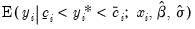
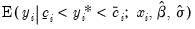
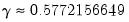
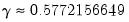

|
|
|

 . If there is no upper truncation, then we set
. If there is no upper truncation, then we set  .
. and
and  , using standard iterative methods.
, using standard iterative methods. ,
,  , are the density and distribution functions. Details on the computation of  are provided below.
, are the density and distribution functions. Details on the computation of  are provided below. is the Euler-Mascheroni constant ().
is the Euler-Mascheroni constant (). . Note that these forecasts always satisfy the inequality .
. Note that these forecasts always satisfy the inequality .  and
and  . In the censored case, those observations are included in the sample and are accounted for in the expected value. In the truncated case, data outside the interval are not observed and are not used in the expected value computation.
. In the censored case, those observations are included in the sample and are accounted for in the expected value. In the truncated case, data outside the interval are not observed and are not used in the expected value computation.